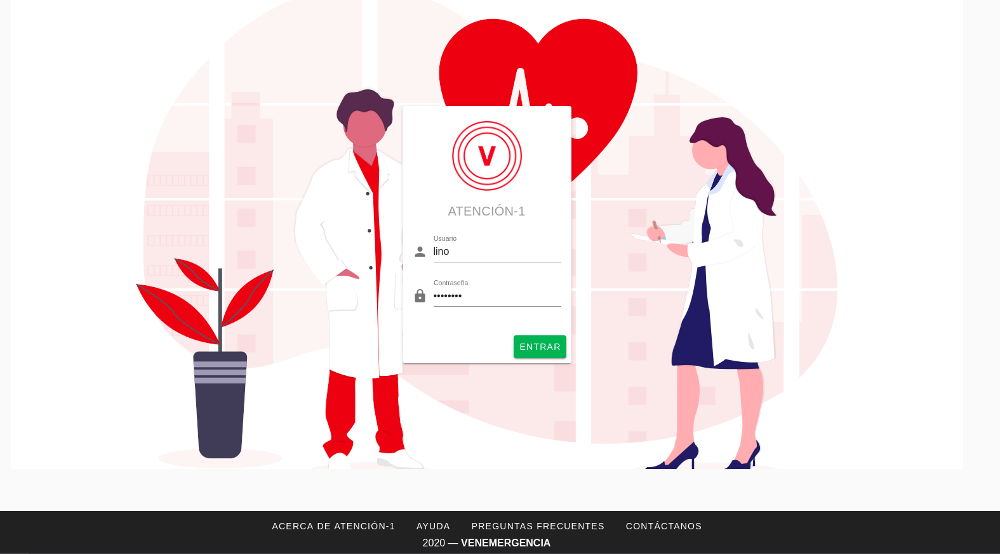

Operador/a¶
El Operador es la persona que atiende la llamada telefónica y agrega la información del afiliado y su solicitud en la plataforma Atención-1. Recuerda que si quieres conocer los conceptos utilizados en la plataforma Atención-1, puedes revisar este Glosario que hemos preparado.
Para ingresar a la plataforma como Operador, debemos escribir en la barra de dirección de nuestro navegador: https://atencion1.venedigital.com. Una vez allí veremos en la barra inferior información acerca de Atención-1, un enlace con ayuda que contendrá un manual, una guía de Preguntas Frecuentes y enlace a un correo electrónico con el que se podrá contactar al equipo de desarrollo.
Para ingresar debemos indicar el nombre y contraseña del usuario, en este caso Operador. Una vez dentro de la plataforma, vemos varios elementos: en la parte superior del lado derecho tenemos el acceso a los datos del perfil del usuario que acaba de ingresar. Del lado superior izquierdo tenemos el menú donde podemos acceder más fácilmente al panel de atenciones. Y en la parte central, se encuentra el panel de atenciones. Una atención es un conjunto de servicios ofrecidos a titulares o beneficiarios de pólizas de seguros. Este panel se encuentra dividido en cuatro secciones:
Atenciones en espera.
Atenciones próximas programadas: en esta sección se encuentran todos los PHD o servicios AMD/LAB/TLD/EMD programados.
Atenciones en progreso: esta sección muestra los servicios que actualmente están siendo atendidos.
Atenciones por cerrar.
En la parte superior podemos saber cómo se encuentra o cuál es la condición de cada servicio por medio de un color determinado:
El color amarillo indica un servicio abierto.
El color verde es un servicio en proceso.
El color azul es un servicio completado.
El color gris oscuro indica un servicio cerrado.
El color gris claro indica un servicio cancelado.
El color rojo que incluye una advertencia con un signo de admiración indica un servicio retrasado.
Al atender una llamada, lo primero que debemos hacer es proceder a crear una atención. Para crear una nueva atención:
Hacemos click en el círculo de color verde con un signo «+» en su interior.
A continuación en el recuadro que contiene el símbolo de la lupa, introducimos la cédula o el nombre de la persona que solicita ser atendida. Atención-1 permite realizar búsquedas con número de cédula o nombre, parcial o completo, de la persona afiliada.
Al pulsar Enter o hacer click sobre la lupa, obtendremos los resultados de la búsqueda en la base de datos del sistema. En caso de no existir un afiliado/a con esos datos, el sistema permitirá ingresar los datos de una nueva persona afiliada <crear-afiliado> . En caso contrario, deberá seleccionarse de la lista desplegada, cuál es el afiliado o la afiliada a atender.
Debes seleccionar el afiliado haciendo click en el círculo que se encuentra junto a su nombre. A continuación, para efectos de verificación, se despliega información sobre los servicios disponibles en función de sus pólizas contratadas.
El sistema espera que se introduzca un motivo de la consulta y un teléfono de contacto antes de habilitar el botón de Crear atención, que es de color verde y está ubicado en la parte inferior derecha de esa pantalla.
NOTA: El número telefónico y el motivo de la consulta son indispensables para poder crearla mientras que las observaciones son opcionales.
Una vez creada la atención ya tenemos disponible la creación de servicios a esta atención. Todos los servicios disponibles que se muestran son aquellos que ofrece el conjunto de planes y póliza(s) del afiliado. Para crear un servicio OMT, debemos hacer click sobre el servicio OMT a fin de que se despliegue una ventana en la que opcionalmente podemos añadir algunos datos adicionales que serán de utilidad cuando el médico atienda dicho servicio: indicar si el afiliado se encuentra o no en su residencia y en compañía de alguien.
Habiendo agregado esta información se hace click en el botón Crear Servicio, el cual pasa a estar listado en el panel de atenciones en espera.
Desde el panel de atenciones, podemos comprobar detalles de la atención y del(los) servicio(s) asociado(s), haciendo click en el icono de atender servicio.
Operador. Crear AMD. Agregar Email
Como un usuario Operador vamos a crear una atención médica domiciliaria o un AMD. Lo primero que debemos hacer es buscar el botón verde circular con un signo positivo (+) que se muestra en pantalla en la parte inferior derecha. Al hacer click en dicho botón desde el panel de atenciones, veremos como se despliega en pantalla la información del afiliado para poder crear la atención. En ella buscamos por las primeras letras del nombre o número de cédula del afiliado hasta que aparezca en la búsqueda los datos que coincidan con él. Al tener la información del afiliado podemos ver qué tipo de póliza y plan tiene para el tipo de servicio que estamos solicitando. Con el número de contacto ya en pantalla, debemos agregar un motivo de la consulta que, en nuestro caso, será una atención médica domiciliaria o AMD, por lo que vamos a agregar que tiene un dolor de estómago, por ejemplo. Creamos la atención y seguido vamos a agregar, entre los servicios disponibles, un AMD-AmisPlus-Seguros Caracas. Es importante resaltar que todos los servicios dentro de Atención-1 pueden ser planificados si pulsamos en botón programado o se pueden tomar para ejecutar en el momento que se están creando. Confirmamos el motivo de la consulta que en este caso es un dolor de estómago y podemos seleccionar, si el afiliado así lo prefiere, enviar un correo electrónico con el resumen del servicio solicitado. En caso de no tener un correo electrónico o de hacer un cambio del mismo, más adelante explicaremos cómo editar la información del afiliado. En los detalles del servicio AMD, podemos indicar en el motivo del servicio que es un dolor fuerte en el abdomen. Al pulsar sobre destino, se desplegará una ventana para asignar la dirección. En la ventana podemos asignar una dirección que actualmente se encuentra registrada en el sistema o agregar una nueva de ser necesario. Después de seleccionar y verificar la dirección pulsamos el botón asignar. Por último debemos indicar si el servicio va a requerir o no pruebas de laboratorio. De ser necesarias las pruebas lo que debemos hacer es seleccionar la casilla correspondiente. Ya podemos crear el servicio y verificar que la solicitud se encuentra en el listado superior de los servicios en espera. En esta pantalla podemos verificar el número del servicio, nombre del afiliado, fecha y hora en la que se registró el servicio, la compañía aseguradora y la ubicación donde se prestará el servicio. En esa misma pantalla podemos editar la información relacionada a la atención de ser necesario para agregar una dirección de correo electrónico. Nos ubicamos al lado derecho donde se encuentre, en un lápiz, la opción para editar. Una vez que hacemos click para editar, aparecerá en pantalla a mano izquierda información del afiliado y en ella se encuentra la casilla de correo electrónico. En ella verificamos con el afiliado su email para descartar, mantener o agregar un nuevo correo. Para agregar un nuevo correo debemos escribirlo y luego pulsar la tecla enter para luego poder guardar la información. Luego de registrar el correo electrónico podemos verificar el resto de la información que aparece en pantalla. Recordemos que este último paso se trata únicamente de hacer alguna edición de un dato específico con respecto a la información que forma parte de la atención y no de tomar la atención. Regresamos de nuevo al listado de atenciones y verificamos que la atención se encuentra en espera. En este momentos los usuarios de tipo médico ya pueden visualizar la atención en el sistema para proceder a tomarla y modificarla.
Operador. Crear EMD. Agregar Medicamentos
Vamos a crear una atención de tipo EMD (entrega de medicamentos o entrega de equipos). Para hacerlo, procedemos a hacer la búsqueda del afiliado a través de su las primeras letras de su nombre o número de cédula. Luego verificamos que la persona tenga disponible estos servicios, la seleccionamos y de igual forma verificamos el número de contacto con el que se encuentra registrada. Con respecto al motivo de la consulta, sin importar que esto se trate de una entrega, siempre debemos llenar esta casilla para poder crear la atención. Podemos llenar esta casilla con motivo de entrega de medicamentos, por ejemplo. Luego, hacemos click en crear y una vez creada la atención vamos a proceder a agregar a esta atención un servicio EMD-AmisPlus-Seguros Caracas. El servicio de entrega de medicamentos puede ser un servicio programado o un servicio programado para ejecutar en ese momento. Para el detalle de servicio EMD es preciso verificar el motivo del servicio. Podemos de igual manera escribir en la casilla entrega de medicamentos solicitados. Para el destino, de igual forma que para los servicios AMD, nos va a pedir que incorporemos la dirección. En este no utilizaremos una dirección ya creada sino que vamos a crear una nueva. Para hacerlo, llenamos las casillas con la información pertinente y al terminar hacemos click en el botón asignar. Lo siguiente que debemos hacer para la creación de los servicios de entrega de medicamento es indicar cuál es el origen del servicio. Entre los orígenes, es decir, de dónde tomamos la orden para la creación de este servicio tenemos: un médico particular, por correo electrónico, por SMS, Whatsapp, faltante en AMD, OMV, AMD, OMT o por retirada de equipo médico. Este último veremos cómo se elabora en otra sección. Para continuar seleccionamos un médico particular y procedemos a crear el servicio. Una vez creado el servicio podemos verificar que se visualiza entre los servicios en espera disponibles desde el panel de Atenciones. También podemos agregar cuáles son los medicamentos si contamos con esa información y hacer la edición de la atención. Esta acción también puede ser realizada por el despachador. En editar la atención, que está indicado con un lápiz a mano derecha, hacemos click. Luego desplegamos la ventana hacia abajo y al final veremos que dice Nota de despacho. Pulsamos sobre el texto para luego escribir sobre las observaciones. Estas observaciones pueden ser el lugar donde van a ser entregados los medicamentos, la manera en que estos medicamentos deben ser entregados o alguna indicación que sea requerida en el recipe. Es muy importante incluir el campo de observaciones para que de esta manera podamos generar el proceso de la nota de despacho. Una vez realizadas las observaciones, localizamos cuáles son los medicamentos/insumos/equipos que vamos a asociar al servicio y hacemos click en el círculo verde con el signo positivo. Escribimos el medicamento y en el sistema seleccionamos el que se corresponda con el tratamiento indicando. Podemos observar que los medicamentos indican si es un inventario agudo o un inventario crítico. Después de seleccionar el medicamento debemos indicar la cantidad. Es sumamente importante resaltar que en la cantidad se debe indicar el número de pastillas o tabletas, no de cajas ni de blister. Luego de indicar la cantidad de tabletas o pastillas procedemos a pulsar el botón de agregar y podemos verificar que la información sea la correcta con respecto a las unidades y, de ser necesario, podemos seguir agregando otros medicamento realizando el mismo procedimiento. Una vez que completamos todos los medicamentos que la persona requiere pulsamos el botón de guardar. De ser necesario, también podríamos hacer una impresión de la nota de despacho. Lo que debemos hacer es pulsar en la parte inferior, a la misma altura del botón de guardar, el ícono de la impresora. Ahora bien, para que este servicio comience a ser atendido, debemos agregar el diagnóstico y asignar una tripulación. En el caso de los servicios EMD y, en general, para todos los servicios, se pueden adjuntar documentos. Esto lo conseguimos realizar si hacemos pulsamos el el círculo verde que, al ponernos sobre él, dice adjuntar documento. Luego de seguir todo estos pasos hemos podido crear un servicio de entrega de medicamentos.
Operador. Crear TLD
A continuación crearemos un servicio tipo traslado TLD. Lo haremos a partir de una atención que ya esté creada sin ningún tipo de servicio asociado por el momento. En el panel de atención nos vamos a editar y veremos que, en el panel que se despliega, esta atención no tiene ningún tipo de servicio asociado. Para continuar, pulsamos el botón circular verde con el signo positivo y escogemos el tipo de servicio que será el TLD. Entre los datos que debemos suministrar para la generación del servicio debemos indicar el motivo de consulta. En este caso el motivo ya lo tiene debido a que se suministró cuando la atención fue creada. También podemos agregar algún comentario que nos parezca pertinente. Vamos a escribir en el motivo de servicio la realización de RX como ejemplo para este ejercicio, e indicamos el origen. Al pulsar sobre la palabra origen se desplegará una ventana en la que debemos suministrar una dirección. En este caso, daremos la dirección donde se irá a buscar a la persona y la asignamos. Sobre el campo destino debemos indicar la dirección donde será llevada esta persona (clínica, hospital, etc.). Al asignar el destino también debemos indicar el tipo de traslado que realizaremos. Por ejemplo, si es un traslado de emergencia, ida y vuelta, UCI, etc. En este caso podemos utilizar un traslado ida vuelta, que implica buscar a la persona para llevarla a realizarse determinados estudios y luego devolverla a su domicilio. Creamos el servicio y verificamos su creación ya que en la pantalla se recarga la información sobre los detalles de este servicio que ha sido añadido a la atención y podemos visualizar todos los pasos que lleva realizar dicho servicio TLD. Sin embargo, también podemos verificar la información en el panel de atención y notaremos que la atención que no tenía ningún tipo de servicio ahora le ha sido agregado uno. Siguiendo estos pasos hemos podido crear el tipo TLD con todas las características correspondientes. Operador. Creación de PHD
Vamos a crear un servicio de hospitalización domiciliaria PHD. La creación de este servicio es diferente a la de los otros tipos de servicios que se utilizan en Atención-1. Por ello, la atención que se crea puede contener únicamente este servicio. Si el afiliado requiere otro tipo de servicio entonces creamos una nueva atención para él. Creamos la atención con el mismo procedimiento con el que la hemos creado anteriormente y le agregamos el servicio que es PHD. Como en los casos anteriores, los servicios que requieren traslado van a pedir dirección y motivo de servicio. Podemos indicar, por ejemplo, que el motivo de servicio es suministro de tratamiento endovenoso. El destino es la ubicación donde debe dirigirse la unidad o vehículo a dar el servicio, así que podemos introducirla de la misma forma que hemos hecho anteriormente. Es necesario destacar que ya que los servicios PHD no necesariamente se originan dentro de Atención-1, debemos indicar por qué fuente llegó la solicitud de este servicio. Para hacerlo utilizamos el campo origen de solicitud de servicio. Este es un campo obligatorio. Entre todas las opciones que se despliegan vamos a seleccionar la opción de correo electrónico, por lo que la solicitud, entonces, fue realizada a través de correo electrónico. Ahora podemos proceder a programar la fecha o las fechas en las cuales se le va a ofrecer al afiliado la atención médica domiciliaria. Pulsamos el círculo verde con el signo más y podemos seleccionar la primera fecha y hora. Debemos utilizar la denominación am o pm para diferenciar el bloque de la mañana con el de la tarde. Después de agregar la primera fecha, seguimos el mismo procedimiento en caso de necesitar agregar más. Si es un tratamiento de varios días seguidos es importante dejar la programación con toda la información detallada, ya que por esta vía el despachador podrá ver todos los servicios que debe atender próximamente. Una vez que hemos creado el servicio lo podemos ver en las atenciones en la sección de próximas programadas. Ahí podemos verificar que la fecha o las fechas fueron agregadas correctamente. También aparecerá la hora en que se realizó la llamada y el nombre del afiliado. Al momento de aproximarse la hora de la atención, esta pasará a desplegarse en la sección de atención en espera .
Operador. Crear Servicio Laboratorio A continuación vamos a crear un servicio de laboratorio como operador. Primero debemos ingresar el nombre de la persona que está solicitando el servicio y confirmamos las pólizas disponibles. Si entre ellas hay una póliza retail pulsamos sobre el botón verificamos que tiene disponible los servicios de laboratorio. Una vez hecho lo anterior, procedemos a indicar el motivo de la consulta y verificamos el número de contacto. No es obligatorio, pero podemos dejar alguna observación. Si indicamos que la persona tiene dolor abdominal como motivo de consulta, podríamos agregar en observaciones que la persona tiene varios días con dolor de estomacal, por ejemplo. Para continuar creamos la atención y le agregamos un servicio de laboratorio que en este caso está indicado en el botón de LAB-OTR AU Retail. Recordemos que las tres primeras letras que tiene cada cápsula indican el tipo de servicio y el resto contiene información sobre el cliente y el tipo de póliza. Al pulsar el servicio de laboratorio podemos indicar si es un servicio programado o no. En el caso de ser programado debemos indicar la fecha y hora del servicio. De no ser programado significa que debe ser atendido a partir de este momento. En la casilla de motivo de servicio indicamos una vez más que es dolor abdominal y en la casilla de destino indicamos cuál es la dirección. Podemos seleccionar una de las direcciones disponibles o asignamos una nueva. Por último asignamos los exámenes de laboratorio que deben aplicarse en la persona a la que se le prestará el servicio. Al seleccionar uno o varios exámenes según sea requerido, pulsamos el botón crear. una vez que el servicio que se ha creado, vemos que se despliega en el historial de atenciones como un servicio que está pendiente de ser tomado. Con todos estos pasos hemos logrado crear un servicio de laboratorio.
Operador. Cancelar Servicio
Para que un usuario operador pueda cancelar un servicio primero debe ingresar a un servicio de cualquier atención. Por ejemplo, podemos ingresar para editar una atención que se trate de un traslado y cuente únicamente con un servicio. Ahí encontraremos el botón para cancelar el servicio. Al pulsarlo se nos desplegará una ventana en la cual es obligatorio indicar el motivo por el cual estamos cancelando dicho servicio. Entre las opciones que nos ofrece el sistema podemos seleccionar carga por error, y esto supone un servicio que fue creado dos veces, se quería crear otro servicio o cualquier otro motivo que haya derivado en un error por parte del operador. Después de confirmar podemos observar que el servicio se ha cancelado de manera exitosa. También podemos ver que en el panel de atenciones esta atención ha pasado al estatus por cerrar , lo que indica que debe ser cerrada por parte del usuario coordinador. Lo podemos confirmar también a través del número de la atención, el nombre de la persona y el color que indica que la atención fue cancelada.
Crear Afiliado Nuevo¶
Atención-1 liberó su versión 0.6 en septiembre del 2020. En esta versión el ingreso de nuevos afiliados no registrados se hace a través de una consulta realizada en forma simultánea con el Validador. Detallamos a continuación cómo utilizar este método de de ingreso de nuevos afiliados.
Ingreso de un Afiliado Titular con información del Validador
Para realizar esta operación, entramos a la plataforma con un usuario operador y hacemos clic en el botón de crear una nueva atención. Hacemos la búsqueda por nombre o por cédula, pero en este caso haremos la búsqueda por cédula. Es importante destacar que realizamos la búsqueda comparando con la base de datos de Atención-1, pero para facilitar la incorporación de nuevos afiliados hemos incorporado un acceso al validador. Entonces, las búsquedas en el validador se hacen por número de cédula, no por nombre. Lo que facilita esta interfaz que podemos apreciar en la sección del lado derecho es que nos trae la información del validador en la misma pantalla con lo que nos facilita el proceso de incorporación de los datos en la base de datos de Atención-1 . Recordemos que son dos bases de datos diferentes, pero es mucho más práctico si tenemos acceso al validador o a la información que arroja el validador a través de la misma pantalla. El llenado de la información se debe hacer en línea horizontal para garantizar que podamos completar toda la información, pues la información que es obligatoria es la que nos permitirá activar el botón de guardar. Por ello, debemos incorporar el nombre y apellido en las casillas que corresponde, el tipo documento de identidad, ya que el número de documento aparecerá por la búsqueda que hicimos. También incorporamos la fecha de nacimiento, agregamos el sexo y prodecemos a tomar información acerca del cliente. En este caso el cliente es quien está prestando el servicio de asistencia médica o los servicios sanitarios. Seleccionamos el plan que en este caso nos indica (como muestra el video) que es un plan de ASI_BÁSICO, y el tipo de contrato que como se indica es un contrato individual. Al pasar a la siguiente línea para seguir completando la información, llenamos la casilla autorizado por con la información referida a quién o de dónde obtenemos los datos del afiliado que estamos incorporando a la base de datos de Atención-1. En este caso indicamos que es validador, puesto que la información la estamos tomando del validador que es precisamente la ventana que debemos tener abierta en estos momentos del lado derecho de la pantalla. Luego, continuamos ingresando el número de contacto y pulsamos la tecla enter. Con este último paso realizado podemos observar que el botón guardar ya aparece en verde, debido a que el número de contacto es el último dato obligatorio para poder guardar la información del afiliado. Luego de guardar verificamos que efectivamente se ha creado el usuario. Esto lo podemos comprobar tanto porque en la parte superior de la pantalla aparecerá el aviso de que el afiliado fue creado exitosamente como porque ya podemos ver la información del mismo en pantalla como nombre, número de cédula y póliza. Si pulsamos sobre la póliza veremos cómo se despliegan los datos sobre ella como el código, el titular, los tipos de servicios que incluyen esa póliza y quiénes están vinculados a esa póliza. Con esto hemos logrado crear un afiliado dentro de la base de datos.
Ingreso de un Afiliado Titular con información que no proviene del Validador
Es importante conocer el procedimiento para incluir afiliados debido a que el número de póliza dentro de Atención-1 es equivalente al número de titulares. Las pólizas pueden ser para una persona o un grupo de personas, pero cada póliza tiene un único titular. De modo que cuando nosotros tengamos que incluir a una nueva persona en Atención-1, lo que debemos hacer como modo de consulta a la persona que solicita el servicio es preguntarle si es el titular. De ser el titular, se hace la búsqueda, conseguimos su información en el validador y procedemos como en el caso del ingreso de un afiliado titular con información del validador. Ahora bien, si esa persona no es el titular, debemos buscar el titular y si no aparece en la base de datos de Atención-1 tenemos que agregarlo. Al agregar al titular nos va a servir de puente a través de la póliza o contrato con la empresa de seguros o póliza autofinanciada con lo cual iremos ingresando los afiliados. Vamos ahora a incluir a una persona que no está en el Validador. Si ingresamos el número de cédula, Atención-1 nos va a reportar que no hay ninguna persona con dicho número registrada en la base de datos. Hacemos clic en agregar afiliado titular y con esto verificamos que tampoco está la información del validador. Al nosotros haber hecho clic para agregar un usuario o afiliado titular se hace automáticamente la carga de información del validador, por lo que si nos aparece un aviso de alerta en amarillo que dice término de búsqueda no encontrado significa que esa persona no se encuentra en el validador. Entonces, procedemos a ingresar el nombre y apellido del afiliado y completamos la información linealmente. En la casilla cliente podemos seleccionar una póliza autofinanciada, por ejemplo. Es decir, la persona está llamando para solicitar este tipo de servicio. Luego ingresamos los números de contacto y pulsamos la tecla enter para que se agreguen y se active el botón guardar. Por último, guardamos la información y verificamos que se haya creado el afiliado haciendo clic sobre el nombre de la persona y veremos que se muestra la información relativa a su póliza haciendo clic sobre el tipo de póliza. De esta manera hemos creado un afiliado que no estaba en la base de datos de Atención-1 que no se encontraba en el validador.
Operador agrega un afiliado de Atención-1 como vinculado en una póliza de un afiliado titular
Vamos a incorporar un nuevo afiliado a una póliza que ya está creada y tiene solamente un titular. Hacemos la búsqueda desde la base de datos de Atención-1, ya sea por el número de cédula o por el nombre. Recordemos que en el validador solo debemos introducir caracteres numéricos por lo que solamente podemos usar el número de cédula. Al hacer la búsqueda, seleccionamos a la persona y solicitamos información sobre la póliza que ya tiene agregada. Recordemos que en la pantalla que nos aparece también podríamos agregar un plan o póliza, ya que en algunos casos hay afiliados que tienen varias pólizas con distintas empresas. Ahora bien, en este caso vamos a agregar a alguien más a la póliza que ya tiene esta persona. Para esto, hacemos clic en el plan y vemos que aparece la información en detalle de esa póliza. Luego, hacemos clic en el botón vincular afiliado. Si hacemos la búsqueda del lado del validador es porque vamos a buscar información sobre una persona que ya se encuentra en el validador o, de lo contrario, hacemos la búsqueda en la base de datos de Atención-1. Si intentamos hacer una búsqueda en el validador con el número de cédula que acabamos de ingresar, inmediatamente el validador dará un aviso en el que no reconoce dicho número por lo que esa persona no se encuentra todavía registrada. Al hacer la búsqueda en la base de datos de Atención-1 sí aparecerá la información relacionada a la persona y lo que debemos hacer es ingresar el vínculo que tiene esta persona con el titular de la póliza ya que es un campo obligatorio. Al agregar el vínculo que supongamos que es el cónyuge, por ejemplo, notamos que ya se activa el botón de guardar, y al hacer clic sobre este botón vemos que ha sido agregado exitosamente este afiliado vinculado a esta póliza. Podemos verificar la información a través de la pestaña que se despliega con la información de la póliza, ya que nos dará los datos de la persona titular y los datos de su cónyuge. También podemos verificar los datos si hacemos la búsqueda de la persona que acaba de ser afiliada en Atención-1 y vemos que se despliega su información. Ahora deben aparecer dos pólizas: una con la cual fue agregada en un principio, y la otra que es la que acabamos de ver y verificar que la persona fue afiliada exitosamente. Ya hemos vinculado un afiliado que estaba en la base de datos de Atención-1 a una póliza de otro titular.
Operador agrega afiliados que no provienen del validador y que no están registrados en Atención-1, como vinculados a una póliza que ya se encuentra ingresada en Atención-1. Caso de uso con cédula y sin cédula.
Vamos a realizar un ejercicio en el que agregamos un afiliado a una póliza que ya existe en Atención-1 pero este afiliado todavía no se encuentra en Atención-1 ni en el Validador. Hacemos la búsqueda por número de cédula para que nos arroje información con respecto al validador cuando hagamos clic en agregar afiliado titular. Al hacerlo podremos ver no solamente que el número no está en el validador sino que además vemos que el afiliado que deseamos agregar no es el Titular, es un afiliado que está vinculado a otra póliza. En ese caso, debemos hacer clic en cancelar y buscamos al Titular de la póliza. Ingresamos el número de cédula del Titular y vamos a hacer el mismo procedimiento que en agregar un afiliado de Atención-1 como vinculado en una póliza de un afiliado titular, pero lo haremos de la siguiente manera: hacemos clic en la información de la póliza, se nos despliega la información y hacemos clic en vincular afiliado. Luego, procedemos a introducir manualmente la información en la base de datos de Atención-1, ya que ni en ella ni el Validador se encuentra todavía la información del afiliado. Lo primero que debemos especificar es si la persona que estamos agregando tiene o no cédula. Primero hagamos el ejemplo con alguien que tenga cédula, por lo que especificamos su número y escogemos el vínculo de hijo. Completamos toda la información necesaria sobre la persona como la fecha de nacimiento, sexo y número de teléfono para luego pulsar enter, y cuando valide el número de teléfono se active el botón de guardar. Luego de guardar veremos que el afiliado fue creado exitosamente por el mensaje que se nos muestra en la parte superior de la pantalla y también porque vemos la información reflejada en la ficha de la póliza. Ahora, hagamos el mismo ejercicio con una persona que tengamos que vincular pero no tiene cédula. Para hacerlo seguimos los mismos pasos, pero quitamos la verificación de posee cédula y vemos que en el campo del número de cédula aparece el número de cédula del Titular y al lado un numeral (#) seguido de un número 3, por ejemplo, que indica que dentro de esa póliza ya hay dos personas que se encuentran afiliadas. En la casilla vínculo asignamos hijo y completamos la información relacionada al nuevo afiliado como nombre, fecha de nacimiento, sexo, entre otros. Una vez más, luego de ingresar el número de teléfono se nos activará el botón de guardar. Al guardar la información vemos que se incluye la cédula del titular con el numeral (#) 3 a los datos de la persona que acabamos de agregar a esta póliza. Si ahora hacemos la búsqueda con el número de cédula del titular de esta póliza nos van a aparecer dos personas, el titular de la póliza y el afiliado que se registró con su mismo número de cédula (hijo), ya que el menor de edad no cuenta con cédula de identidad. Si hacemos clic sobre el nuevo afiliado podemos comprobar que están todos los datos que acabamos de agregar. Siguiendo estos pasos hemos agregado dos afiliados que no se encontraban en el Validador a una póliza de un Titular que ya se encontraba en el Validador.